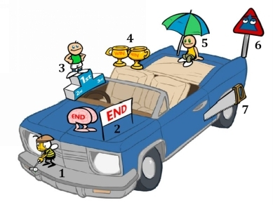

“Making the simple complicated is commonplace; making the complicated simple, awesomely simple, that’s creativity.”
~ Charles Mingus
We have just learned to bring information to life by turning information into pictures or mind movies. Now we need to learn to create files, for pictures, from our long-term memory. This will assist us in remembering new information. These systems require you to think differently. I always think it is amazing how people want to improve their memory and concentration, but they do more of the same thing and expect a different result. You have to do different, to become different.
The method that I will share with you now is called, The Car Method. Our car is a great long-term storage compartment because we know it well and can easily navigate it in our mind. With this method, as with all of them, I want you to SEE the images in your mind. Remember every word in any language is only a picture drawn with letters. Get rid of your excuses like, “I’m not creative” or “I don’t think like this”. This isn’t how I think either; this is how I have trained myself to think, because it works.
These methods may seem silly but just go with it. I promise that you will see the point and you will remember the information. These systems take long for me to explain, but they work at the speed of thought. The only reason it won’t work for you, is if you don’t do it.
We are going to use nouns for this exercise because they are easy to imagine and therefore easier to control and store. Then in the second exercise, and the rest of the book, we will use more abstract information. Follow the images in your mind and let’s see how much you remember.
See your car in your mind and imagine you squeeze a big apple into the front grid of your car. Take a carrot and stab it into the bonnet. On the windscreen see grainy bread, and think to yourself, “The grainy bread is going to damage my windscreen wipers.” Get inside your car and squash dried fruit on the dash board, really see it go into your speedometer. On the driver’s seat imagine you are sitting on blue berries and strawberries – really feel it. Throw eggs at the person sitting in the passenger seat next to you, they now have egg on their face. Imagine you are pouring thousands of nuts and seeds onto your back seat. Go outside your car and imagine a massive orange on your roof. You open the boot and it is full of fish – really smell the fish. In the exhaust pipe there is broccoli and Brussels sprouts growing out of the exhaust, and finally the tires of your car are made out of sweet potatoes. Sweet!
Go through your car, from the beginning to the end, and see if you can remember all the information. If a word didn’t stick, go back, make the connection stronger and SEE it more clearly in your mind.
What you have just learned are fourteen super foods; foods that have been shown to improve your vitality and keep your mind agile and alert. Not only do you know the list forwards but you also know it backwards and inside and out. What is on the roof? What are the car tires made of? What was on the driver’s seat? What was on the bonnet of the car? Your mind automatically makes the connection and answers the question for recall. Now that you really know it, it is easier to use and think about.
Some people say, “But now I have to remember the car too, you are giving me more to remember.” That is not true. With all of the systems you will be using something that is already in your memory. In fact, you are using all of the unused space in your long-term memory.
You remembered the entire list and with ease. Now, why does this system work so well? If you throw water into a sieve it goes in and straight through. If you put a packet into the sieve the water will get trapped. Your memory works in the same way. Your long-term memory (things that are in your memory forever, like your name and what your house looks like etc.) is like the packet that can be used to trap short-term information (new information coming in, like a new telephone number.) When you have managed to do that, you make a strong medium-term memory (MTM).
With the car list your whole car is in your long-term memory (LTM). LTM offers you a place to store the information. The locations in the car become storage compartments for the short-term memories (STM). All the memory methods work with my formula: LTM + STM = MTM.
These methods also organize information, therefore making it easier to find. What is easier to remember, ‘Super memory’ or ‘Yomerm puers’? Same letters, but very different meaning and the second is harder to memorize. The more order you put into a subject the easier it will be to remember. The secret to accelerated learning is superior organization.
We can use other cars to remember other new information too. Here is a picture of a car with seven images on it. It shouldn’t conflict with the food car, because it opens up a new ‘memory file’.
Look at the picture below and make sure that you can clearly recreate the whole image in your mind. Break the images down; look at each place and make sure that each one sticks to its place.

Have you done that? Good, what you have just learned are Stephen Covey’s Seven Habits of Highly Effective People. By remembering all seven images you are creating points of reference within your mind for each of the habits. When you have it in your memory it will be easier to gauge if you are living the Seven Habits. When you mentally look at the car you will instantly be able to recall all the information. Remember the more you know, the easier it is to get to know more.
Let me explain each of the pictures; the Seven Habits are as follows:
Habit 1: Be Pro-active – I thought of a Bee that is a pro-golfer. That picture should be enough to trigger habit 1.
Habit 2: Begin with the End in Mind – The brain is running a race, and looking at the end in mind.
Habit 3: Put First Things First – the man is in 1st position, putting first things first.
Habit 4: Think Win/Win – the two trophies show that everyone wins with win/win.
Habit 5: Seek First to Understand, Then to be Understood – The man under the umbrella will stand up.
Habit 6: Synergize – sign balancing on the edge with eyes.
Habit 7: Sharpen the Saw – on the tire of the car.
With your memory always use as few pictures as possible, to remember as much as possible. The more simple and clear it is, the less you will feel overwhelmed.
You can also make the connection that the first 3 habits are the Private Victory: the front of your car is private; you are the only one that opens the bonnet of your car. Habits 4, 5 and 6 are the Public Victory: in the car, you allow others to get into your car, it is public. Habit 7 is outside the car: the seventh habit keeps everything else in check.
Remember these habits, read the book to get more understanding and retention and live them. As Stephen Covey said, “Habits can be learned and unlearned. But I also know it isn’t a quick fix. It involves a process and a tremendous commitment.”
In this chapter you have been able to remember twenty-one bits of useful information. These methods help you to organize information more clearly and therefore you will be using more of your memory power and potential. All the methods in this book help you to store information that can be used. You can make many more storage compartments in and on your car. If you think about it you can use every detail of your car to find at least 100 places to store new information in your memory. You can also use any other forms of transport: buses, trains, airplanes, ships or even space ships as storage files or compartments.